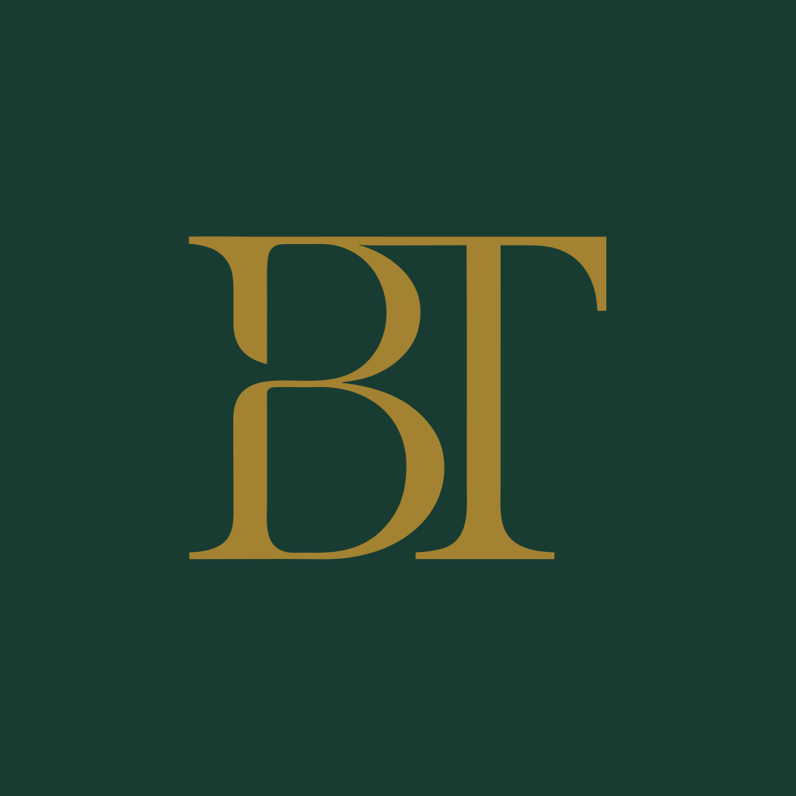

The current website logo.
This is the exact circular mark used on the website. The green circle has no gold outline. Compare it with the earlier square concept below.

OriginalThis is the exact circular mark used on the website. The green circle has no gold outline. Compare it with the earlier square concept below.

Original